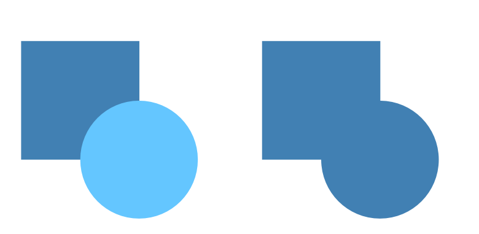
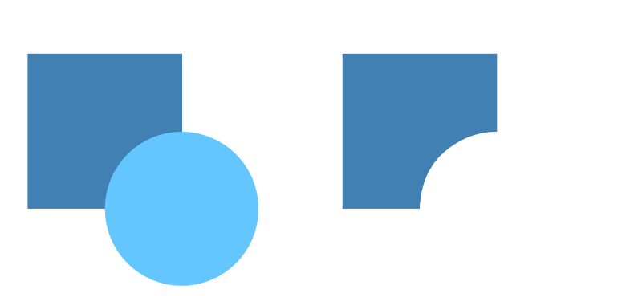

Joining operations
There are various operations available:
Add—creates a new object from the sum of the selected objects.

Subtract—removes overlapped areas of the lowest object. All other selected objects are discarded.

Intersect—creates a new object from the overlapping areas of selected objects.

Divide—splits object areas into separate objects; the object from the intersecting area retains the color of the upper object.
Xor—merges selected objects into a composite object with transparent area where filled regions overlap.